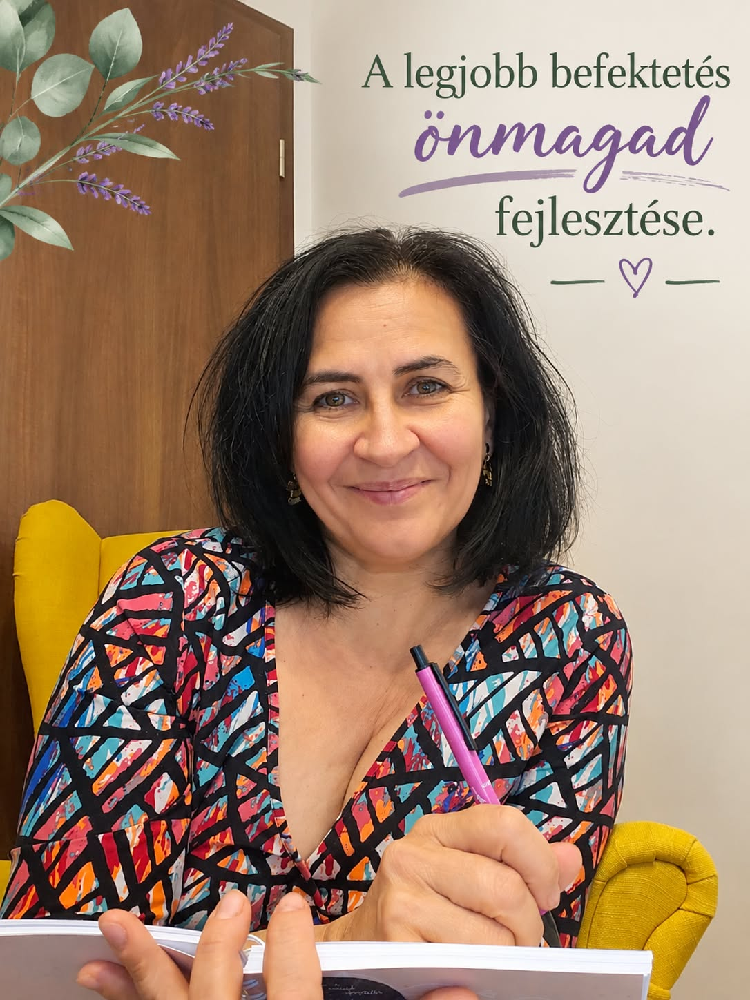

Rólam
A Profitálj magadból története

Ki vagyok?
Ilona vagyok - intuitív life coach, okleveles magyar szakos bölcsész és középiskolai tanár, két gyermek édesanyja és feleség.
Több mint két évtizedes pedagógusi tapasztalattal a hátam mögött pontosan tudom, mekkora ereje van a szavaknak, az értő csendnek és a valódi odafigyelésnek. Bölcsészként megtanultam a sorok között olvasni, észre venni azt is, amit talán még magadnak sem mersz kimondani, tanárként pedig azt, hogyan lehet valakit türelemmel, a saját tempójában kísérni a fejlődés útján.
A beszélgetéseink során nem elméleteket kapsz, hanem egy biztonságos, ítélkezésmentes teret. Mellettem nem kell megfelelned: lehetsz bizonytalan, fáradt vagy útkereső, együtt, lepésről lépésre bogozzuk ki, merre tartasz, és mi ad neked valódi belső stabilitást.
És hogy ki vagyok a coaching falain kívül?
Ugyanolyan hús-vér ember, mint te. Találkozom a barátaimmal és megváltjuk a világot. Megküzdök a mindennapi egyensúlyért a családi teendők és a munka sűrűjében, koncerteken énekelem a Bagossy Brothers Company dalait, ha igazi feltöltődére vágyom, és szenvedélyesen szurkolok a Liverpoolnak a hétvégéken, mert a futball nálunk nemcsak sport, hanem élő bizonyíték arra, mit jelent a végsőkig hinni és soha fel nem adni (You'll Never Walk Alone).
Mi az intuitív life coaching?
Egy fókuszált, támogató beszélgetéssorozat, amelyben kérdésekkel, figyelemmel és eszközökkel kísérlek a jelenlegi elakadásodtól a saját válaszaid és megoldásaid felé.
Mitől intuitív?
Nem előre gyártott sémákat és tankönyvi paneleket húzunk rá az életedre. Figyelek a szavaid mögötti csendre, a hangsúlyokra és a megérzéseidre is. A módszertant mindig hozzád, a te tempódhoz és személyiségedhez igazítom.
Miben segít?
- Feltérképezzük a benned rejlő erőforrásokat és erősségeket.
- Lebontjuk azokat a gátló hiedelmeket és megfelelési kényszereket, amelyek eddig visszatartottak.
- Ránézünk a halogatás és a félelmek valódi gyökerére.
A lépéseket TE teszed meg a saját életedért, ÉN pedig azt a biztonságos, ítélkezésmentes teret és tükröt adom hozzá, ahol mindezt bátran megteheted.
Amiben hiszek...
Hiszem, hogy az igazi, tartós változás mindig a mély önismeretből indul ki.
Amikor elkezdjük megérteni a saját mintáinkat és működésünket, megszűnik a tehetetlenség: ráébredünk, hogy mindig vannak új lehetőségek, és bármikor választhatunk egy bátrabb, önazonosabb életet.
Nem kell tökéletesnek lenned ahhoz, hogy elindulj. Elég, ha készen állsz tenni önmagadért, én pedig ott leszek melletted támaszként.
Fordulj hozzám bizalommal, ha...
- Nehezen mondasz nemet: szeretnéd végre bűntudat nélkül meghúzni a személyes és szakmai határaidat, bátrabban kiállva magadért.
- Túlgondolsz és halogatsz: tisztázni szeretnéd a céljaidat, és véget vetnél a belső őrlődésnek és bizonytalanságnak.
- Visszatart a kudarctól való félelem: nem hiszel eléggé magadban, vagy egy korábbi csalódás miatt nem mersz újra elindulni.
- Keresed a szakmai utadat: elakadtál a karrieredben, és szeretnéd megtalálni az önazonos irányt.
- Feszültség van a kapcsolataidban: magabiztosabb kommunikációra, kevesebb félreértésre és belső nyugalomra vágysz a mindennapokban.